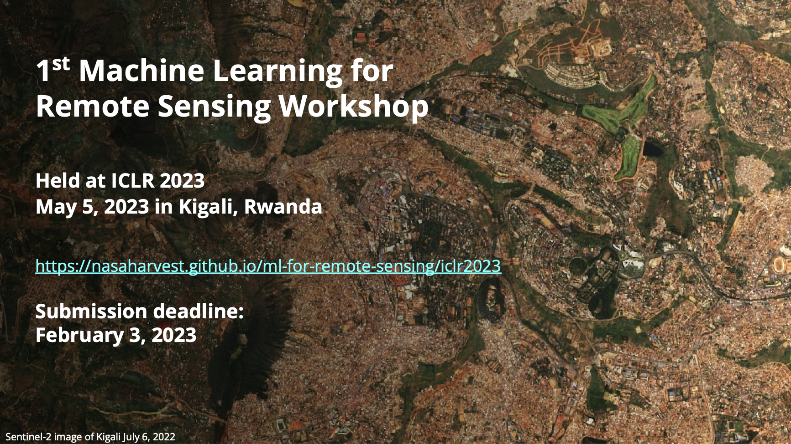
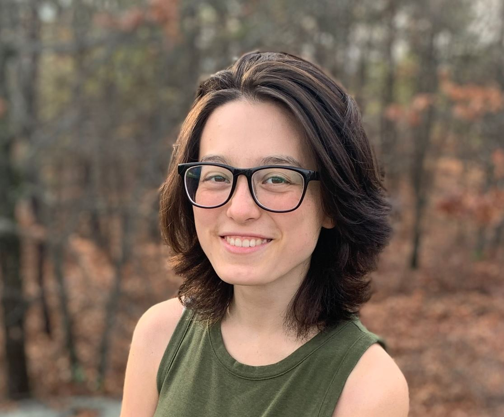

NASA Harvest is NASA's agriculture and food security program. Its machine learning team aims to:
Conduct fundamental machine learning research motivated by applications of remote sensing data
Enable and advance the adoption of ML methods using remote sensing data to benefit food security and agriculture
Machine Learning for Remote Sensing | ICLR 2023 Workshop | May 5, 2023
Scalable Cropland Mapping | In-house Workshop | August 22-25, 2022
Machine Learning for Remote Sensing: Agriculture and Food Security | CVPR 2022 Tutorial | June 20, 2022
Team |
|||
|---|---|---|---|
 |
 |
 |
 |
| Dr. Hannah Kerner (Arizona State University) |
Dr. Catherine Nakalembe (University of Maryland) |
Gabriel Tseng (McGill University) |
Ivan Zvonkov (University of Maryland) |
 |
 |
||
| Abena Boatemaa Asare-Ansah (University of Maryland) |
Adebowale Daniel Adebayo (University of Maryland) |
Adam Yang (University of Maryland) |
Aditya Shrivastava (Arizona State University) |
|  | |||
| Ekenedilichukwu Ndu (University of Maryland) |
Sheila Baber (University of Maryland) |
Saketh Sundar (River Hill High School) |
Manthan Satish (Arizona State University) |